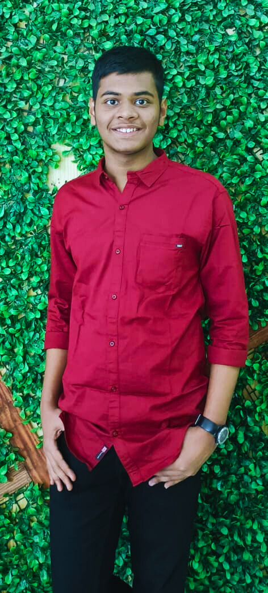
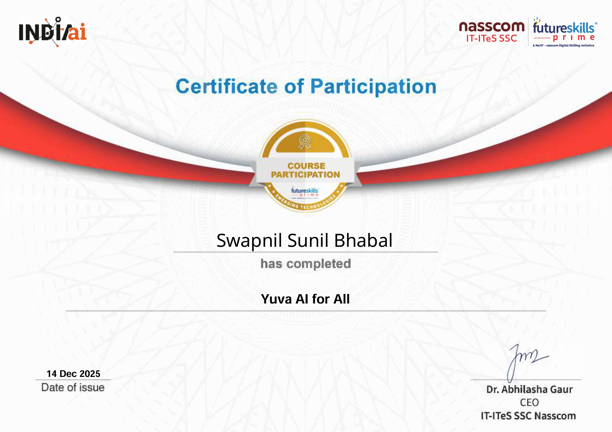
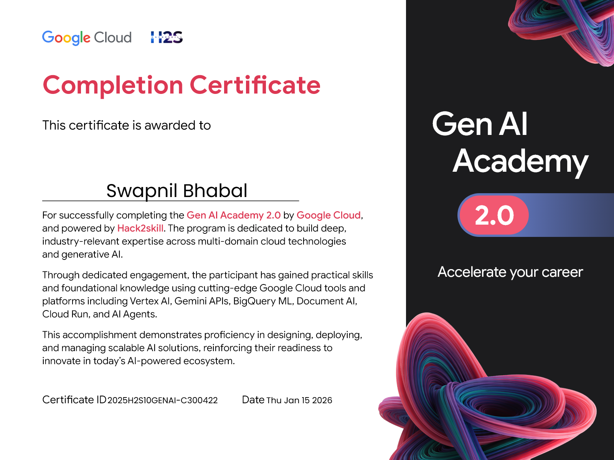

E-Waste & Environmental Management
>_
Welcome to my specialized academic repository documenting sustainable IT infrastructure, circular economy frameworks, and responsible e-waste recycling initiatives.
Swapnil Bhabal
IT Engineering Student
Information Technology
VIT Mumbai
3rd Year (2026)
Artificial Intelligence and Machine Learning
If it can't be reduced, reused, repaired, rebuilt, refurbished, refinished, resold, recycled, or composted, then it should be restricted, designed or removed from production. — Pete Seeger

About Swapnil Bhabal
I am an IT Engineering student at Vidyalankar Institute of Technology (VIT), Mumbai, passionate about combining core software engineering principles with sustainable environmental management practices.
Through my coursework in E-Waste & Environmental Management, I explore how electronics lifecycles impact natural ecosystems, and how green computing can minimize toxic footprints in tech hardware development.
About The Course
Curricular structure, learning outcomes, and technical objectives for E-Waste & Environmental Management (VEC02) at Vidyalankar Institute of Technology (TE INFT, Sem V).
Cognitive Objective
Apply knowledge of engineering materials and physical teardown to design technically sound systems and adapt to green innovations.
Affective Objective
Understand human, social, ethical, and environmental context of the IT profession to contribute positively to sustainable societal needs.
Behavioural Objective
Inculcate research and development abilities, enabling students to dissect real-world e-waste challenges through scientific methodologies.
NBA Course Outcomes (COs)
Direct module alignment with Bloom's Taxonomy and Program Outcomes (POs)
Concept & Recycling: Understand the fundamental need and scientific principles of e-waste management and material recovery (Module 1).
Legislative Policies: Master national and international regulatory frameworks: India E-Waste Rules 2016/2022, EPR, RoHS, WEEE, and Basel Convention (Module 4).
Tools & Assessment: Recognize tools and engineering technologies required for recycling assessment, monitoring, and Environmental Impact Assessment (EIA) (Module 2 & 6).
Global & Contemporary Impact: Address contemporary technological solutions including Green Buildings, GIS/Remote Sensing, and Carbon Credits (Module 5 & 6).
Daily Life Application: Evaluate pollutant exposure pathways (neurotoxins, heavy metals) and conduct health risk assessments to minimize environmental hazards in daily operations (Module 3).
The Anatomy of E-Waste
Electronic waste is not simply scrap—it is an intricate composite of scarce recoverable resources and persistent environmental hazards.
Global E-Waste Generated
According to the Global E-Waste Monitor (UN), humanity generated 62 million tonnes of e-waste in 2022, on pace to hit 82M tonnes by 2030. Only 22.3% is formally documented as collected and recycled.
Recoverable Metals Trapped
Discarded electronics contain roughly 31 billion kg of high-value metals including copper, gold, aluminum, and critical rare-earth elements like neodymium and cobalt.
Personal Digital Footprint
Calculated during laboratory inventory assessments. Consumer electronics manufacturing accounts for up to 80% of a device's lifetime carbon footprint before it is even powered on.
Hazardous Contaminants
Crude dismantling and acid leaching lead to severe bioaccumulation in soil and groundwater:
Lead (Pb): Solder joints & CRT funnels; causes acute neurotoxicity and kidney dysfunction.
Mercury (Hg): Cold-cathode backlights & tilt sensors; bioaccumulates as methylmercury in aquatic food chains.
Cadmium (Cd): SMD chip resistors & older batteries; categorized as a Group 1 human carcinogen.
BFRs: Brominated flame retardants in PCBs; release toxic dioxins and furans when incinerated.
Metallurgical Recovery Routes
Formal industrial-scale pipelines for closed-loop resource extraction:
Mechanical Separation: Cross-flow shredders, magnetic overbands for ferrous metals, and Eddy Current separators for aluminum and copper.
Pyrometallurgical Smelting: Thermal oxidation in top-submerged lance furnaces (e.g., IsaSmelt) separating base metals into silica-based slag.
Hydrometallurgy & Leaching: Acidic and thiourea leaches, solvent extraction, and electrowinning for high-purity gold and palladium refinement.
Circular Waste Hierarchy
Prioritizing highest value retention from product lifecycle management:
Technical & Personal Skills
Bridging strong programming fundamentals, data science, and soft skills to build scalable solutions.
Software & Web
Skilled in building websites supported by strong programming fundamentals, enabling clean logic and structured development.
Data Science & ML
Experienced in analyzing datasets, interactive visualization, and modeling trends using machine learning algorithms.
Soft Skills & Languages
A collection of soft skills and linguistic abilities that support my teamwork, communication, and personal growth.
Coursework & Assignments
Explore submitted lab reports, case studies, and environmental management research notes. Hover cards to preview.
My Certificates






.png)
.png)
.png)
.png)
.png)
.png)
Hover to pause · Click any certificate to view it full size
Let's Discuss Green Technology
Have questions regarding coursework, recycling drives, or technical collaborations? Feel free to reach out directly.
swapnil.bhabal@vit.edu.in
Mumbai, Maharashtra, India